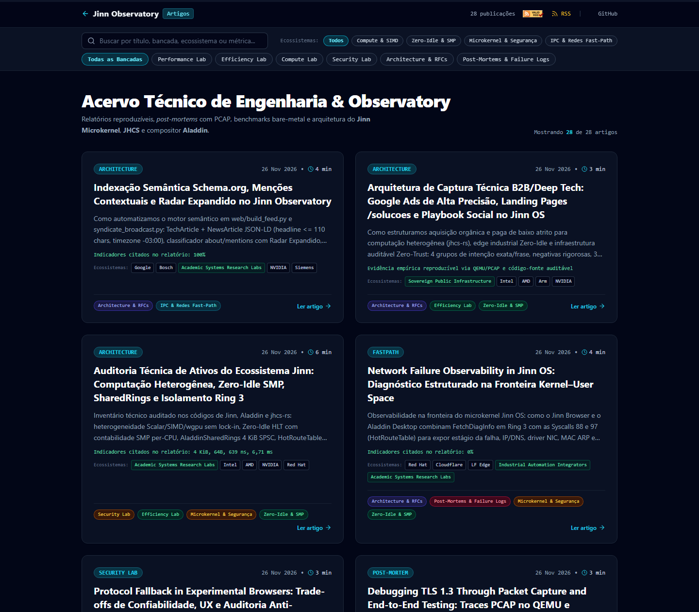
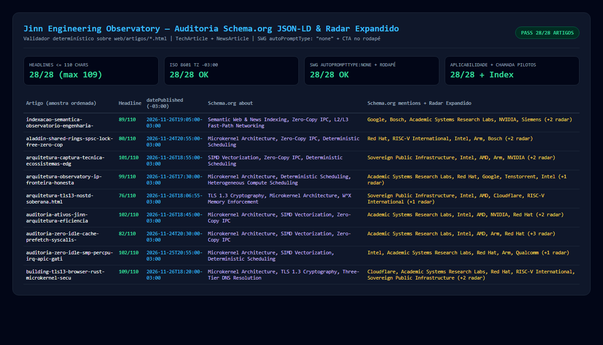

Indexação Semântica Schema.org, Menções Contextuais e Radar Expandido no Jinn Observatory
Para que pesquisas técnicas encontrem o artigo certo sem depender de SEO artificial, evoluímos o pipeline estático em web/build_feed.py e scripts/syndicate_broadcast.py (com wrapper em web/syndicate_broadcast.py). Agora cada artigo recebe classificação automática por palavras-chave técnicas para about e mentions, timestamps normalizados em -03:00, headlines limitadas a 110 caracteres, badges clicáveis na central /artigos/ e resumos visuais nos feeds e Release Notes.
1. Diagnóstico do Pipeline Anterior & Lacunas Identificadas
Ao auditar os artigos publicados antes desta refatoração no Jinn Engineering Observatory, identificamos cinco gargalos objetivos que afetavam a precisão semântica para Google News, buscadores técnicos e automações de release:
-
Headlines acima do limite de 110 caracteres: 8 artigos possuíam títulos de página longos (entre 112 e 138 caracteres) injetados diretamente no campo JSON-LD
headline. Criamosclamp_headline(..., 110)preservando divisões naturais e fronteiras de palavra. -
Timestamps mistos (
Zvs-03:00): artigos antigos semarticle:published_timeou marcados em UTC exibiam sufixoZemdatePublished. Padronizamos a conversão viaTZ_BRTpara garantir ISO 8601 com fuso-03:00em100%do acervo. -
aboutementionsestáticos por domínio amplo: o JSON-LD dependia apenas de listas fixas por categoria e omitia atores contextuais (NVIDIA, Bosch, STMicroelectronics, Google) e entidades do Radar Expandido (Industrial Automation Integrators, Academic Systems Research Labs, Sovereign Public Infrastructure). Implementamosclassify_semantic_metadatacom 12 regras conceituais e 20 regras contextuais de menção. -
Ausência do bloco padronizado de aplicabilidade em artigos legados e layout do buscador em
/artigos/: artigos anteriores não exibiam de forma uniforme a tríade Indústria, Uso Doméstico e Servidores nem pills clicáveis para entidades individuais (?q=). Adicionalmente, a inspeção visual via Chromium headless revelou compressão horizontal da barra#article-searchao lado das 7 pílulas de bancadas em 1440px e um falso positivo regex (2Bextraído deB2B). Ambos foram corrigidos com layout em duas faixas e lookbehind negativo(?<![A-Za-z])emextract_measurable_gain. -
Sinergia com o pipeline de sindicação:
scripts/syndicate_broadcast.pyainda não extraía automaticamente as imagens<figure>de cada relatório para compor o resumo de evidências visuais em RSS/Atom, Discord, Telegram e GitHub Release Notes, e não havia ponto de entrada sobweb/syndicate_broadcast.py.
2. Arquitetura Implementada & Melhorias Verificadas
Motor Semântico (web/build_feed.py)
Combina bancadas (classify_labs), ecossistemas (classify_ecosystems) e regras finas (SEMANTIC_CONCEPT_RULES + MENTION_RULES + RADAR_EXPANDED_ENTITIES) para montar TechArticle + NewsArticle sem dependência externa. Audita ainda swg-basic.js (autoPromptType: "none") e posicionamento exclusivo do CTA no rodapé.
Central Clicável & Broadcast
Em web/artigos/index.html, cada badge de bancada (?lab=), domínio (?eco=) ou ecossistema/radar (?q=) filtra o catálogo em memória e sincroniza a URL. Nos scripts de difusão (scripts/syndicate_broadcast.py e web/syndicate_broadcast.py), discover_visual_evidences coleta capturas .png e legenda técnica para feeds e Releases.
3. Evidências Visuais Reais: Central Atualizada & Auditoria JSON-LD

/artigos/ após correção do layout da barra de busca (w-96 shrink-0), exibindo 6 bancadas, filtros de ecossistema e badges clicáveis por organização e Radar Expandido.

100% das headlines em JSON-LD abaixo de 110 caracteres, datePublished padronizado em -03:00, about/mentions contextuais e conformidade Reader Revenue Manager (autoPromptType: "none" + rodapé).
4. Aplicabilidade Prática (Indústria, Uso Doméstico e Servidores)
Usos Industriais (Descoberta de Ativos Edge, PLC/IHM & Integradores Regionais)
Engenheiros de automação e integradores fora do radar tradicional de OSDev que buscam por requisitos específicos (deterministic scheduling, Zero-GPU 2D compositing, FAT32 fault-tolerant persistence) encontram diretamente a publicação e a landing page /solucoes/ correspondente com fronteira explícita da Tabela B.
Usos Domésticos & Acadêmicos (Acervo Didático Auditável em Rust no_std)
Estudantes, entusiastas de reuso de PCs antigos e grupos universitários navegam por post-mortems, compositores SIMD e protocolos bare-metal por tópico ou bancada sem scripts pesados de rastreamento, com CTA discreto apenas ao fim da leitura.
Usos em Servidores (Sindicadores RSS/WebSub, Release Notes & Arquitetura Zero-Trust)
Agregadores RSS/Atom, bots de CI (.github/workflows/broadcast.yml) e avaliadores de infraestrutura de borda recebem metadados ricos com palavras-chave técnicas, evidências visuais auditáveis e métricas extraídas de forma determinística via Python padrão.
5. Melhorias & Limitações Conhecidas
A associação semântica atual utiliza regras léxicas determinísticas e auditáveis em repositório — o que evita custos de APIs externas e alucinações, mas depende de curadoria de termos em SEMANTIC_CONCEPT_RULES e MENTION_RULES à medida que novos domínios forem explorados. A interpretação final pelo Google News Publisher Center e Rich Results Test ocorrerá somente após o deploy em produção no GitHub Pages e notificação WebSub.
Jinn Engineering Observatory • Semântica & Colaboração Aberta
Domínios Técnicos & Ecossistemas Relacionados
Badges clicáveis indexados por bancada, domínio de engenharia e organizações/padrões do Radar Expandido (Nível B contextual, sem endosso implícito):
Aplicabilidade: Indústria, Uso Doméstico e Servidores
Gateways industriais, coletores SCADA e frotas com links intermitentes via SharedRings SPSC (4096 B), HotRouteTable e diagnóstico de falha por estágio.
Navegação ágil com DNS 3 camadas (/disk/hosts → LRU → upstream) e fallback resiliente de conectividade.
Caminhos críticos IPC lock-free e observabilidade de pilha TCP/TLS 1.3 no_std com inspeção direta por syscalls.
Chamada Aberta para Pilotos (Indústria Local, Universidades & Setor Público Ético)
Convidamos integradores de automação industrial, laboratórios universitários de arquitetura/SO e instituições públicas eticamente responsáveis a reproduzirem estes experimentos em silício real (fechando lacunas emulador vs. hardware da Tabela B) ou propor estudos-piloto com Jinn OS, Aladdin e JHCS.
![[Valid RSS]](/valid-rss-rogers.png "Validate my RSS feed")